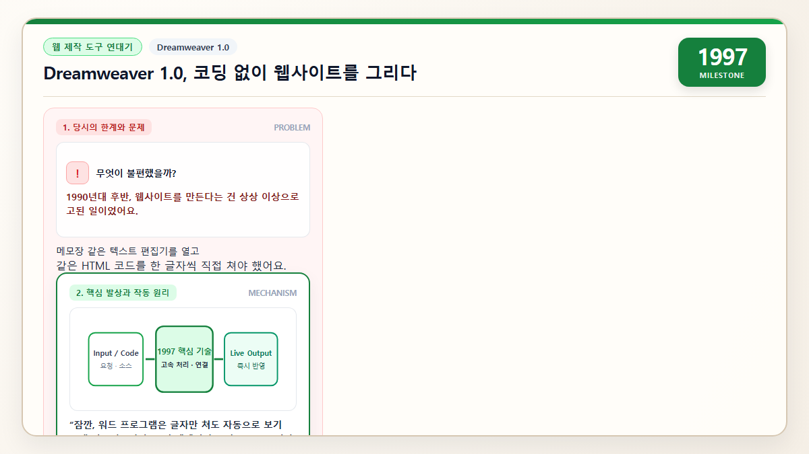

1997
Dreamweaver 1.0, 코딩 없이 웹사이트를 그리다
“마우스로 끌어다 놨더니 코드가 자동으로 만들어지네!” Dreamweaver가 나오면서 디자이너도 처음으로 웹사이트 만들기에 참여하게 됐어요.

1990년대 후반, 웹사이트를 만든다는 건 상상 이상으로 고된 일이었어요. 메모장 같은 텍스트 편집기를 열고 <table border="1" cellspacing="0" cellpadding="5"> 같은 HTML 코드를 한 글자씩 직접 쳐야 했어요. 이미지 위치 하나 옮기려고 코드 한 줄 고치고 브라우저로 새로고침해 확인하고 마음에 안 들면 또 고치고... 디자이너는 손도 못 댔어요. "코드를 모르면 웹사이트를 못 만든다"는 게 상식이었거든요.
매크로미디어(Macromedia)의 한 엔지니어는 이렇게 생각했어요. "잠깐, 워드 프로그램은 글자만 쳐도 자동으로 보기 좋게 만들어주잖아. 그럼 웹페이지도 마우스로 끌어다 놓으면 컴퓨터가 알아서 HTML 코드를 만들어주면 안 될까?"
그렇게 해서 1997년 Dreamweaver가 탄생했어요. 디자이너가 이미지를 화면에 끌어다 놓으면 옆 창에 HTML 코드가 자동으로 짜여 나왔어요. 광고 에이전시의 현장의 디자이너 사이에서도 감탄이 터져 나왔죠. "제가 그림 그리는 것처럼 페이지를 만들었는데, 결과물이 진짜 웹사이트로 작동해요!" 개발자는 옆에서 자동 생성된 코드를 보며 미세 조정만 하면 됐어요. 디자이너와 개발자가 처음으로 같은 화면을 보며 협업한 때였죠.
이 "코딩 없이 웹사이트 만들기" 사상이 오늘날 어떤 결과를 가져왔을까요? 코드를 몰라도 블로그나 가게 홈페이지를 만드는 워드프레스, 노션, 윅스, 카카오 브런치, 네이버 블로그는 1997년 Dreamweaver에서 시작됐어요.
Dreamweaver는 시각 편집과 코드 뷰를 묶어, 개발자가 아닌 사람도 웹 제작에 참여하게 했습니다. 이 경험 이후 웹 IDE가 시각화 기능을 넣기 시작했습니다.